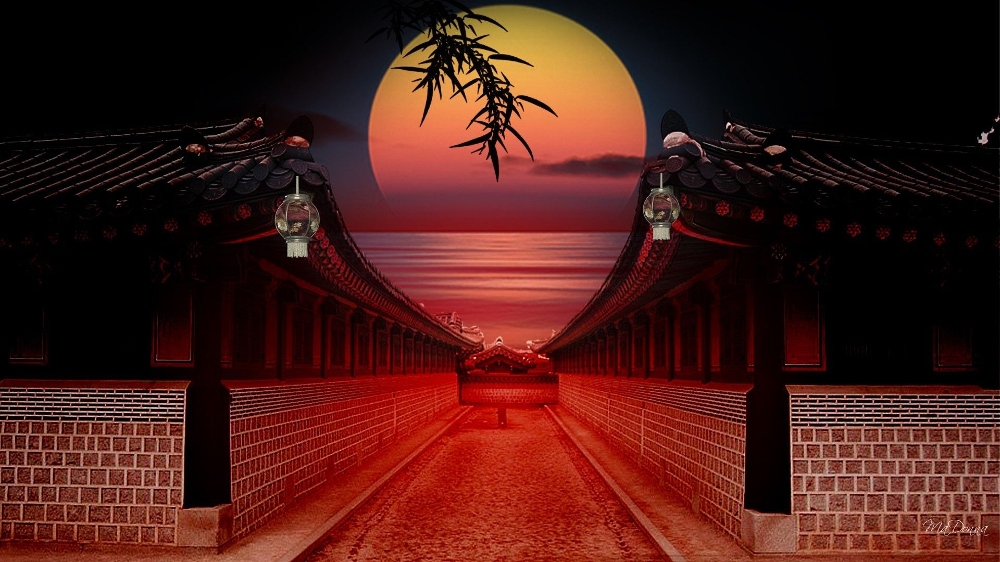
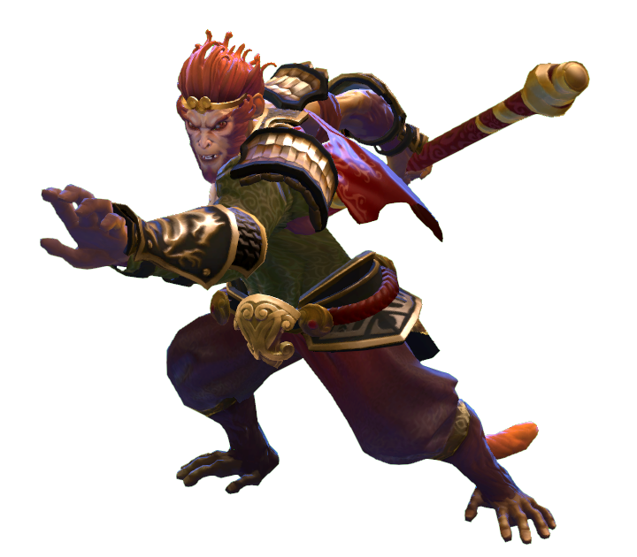

SHINSEI VILLAGE
Join the Mystic Adventure
SHINSEI VILLAGE
Genuine Storytelling Project

VISION
Shinsei Village is a collection featuring 1,200 demigod monkeys, unraveling a mysterious case to save their village. The project is not just a PFP collection, but a fascinating on-chain storyline.
Each stage of development is aimed to deliver the adventure experience to the community, as well as provides rewards and benefits for all holders.